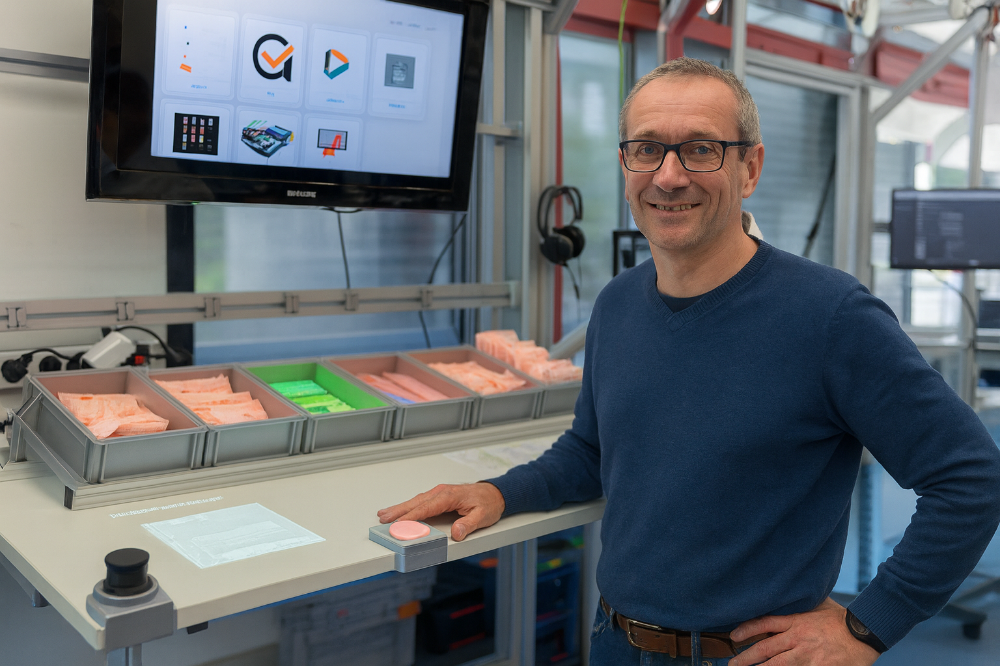

LERNEN SIE MEHR ÜBER BISHERIGE ANWENDUNGSFÄLLE

MONTAGE TÄTIGKEITEN
Unterstützung bei komplexen Montageprozessen durch intelligente Unterstützung und Schritt-für-Schritt-Anleitungen.
Mehr erfahren
LANDSCHAFTS- UND GARTENBAU
Optimierte Arbeitsabläufe für Garten- und Landschaftsbau mit digitaler Planung und Dokumentation.
Mehr erfahren
ZIMMERREINIGUNG
Effiziente Reinigungsabläufe mit systematischer Aufgabenverteilung und Qualitätskontrolle.
Mehr erfahren